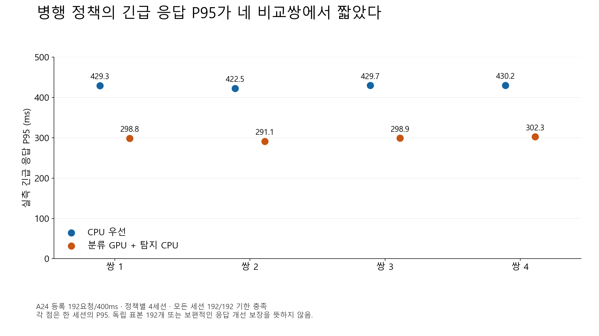
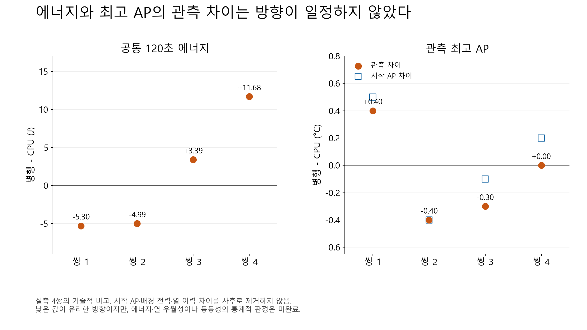
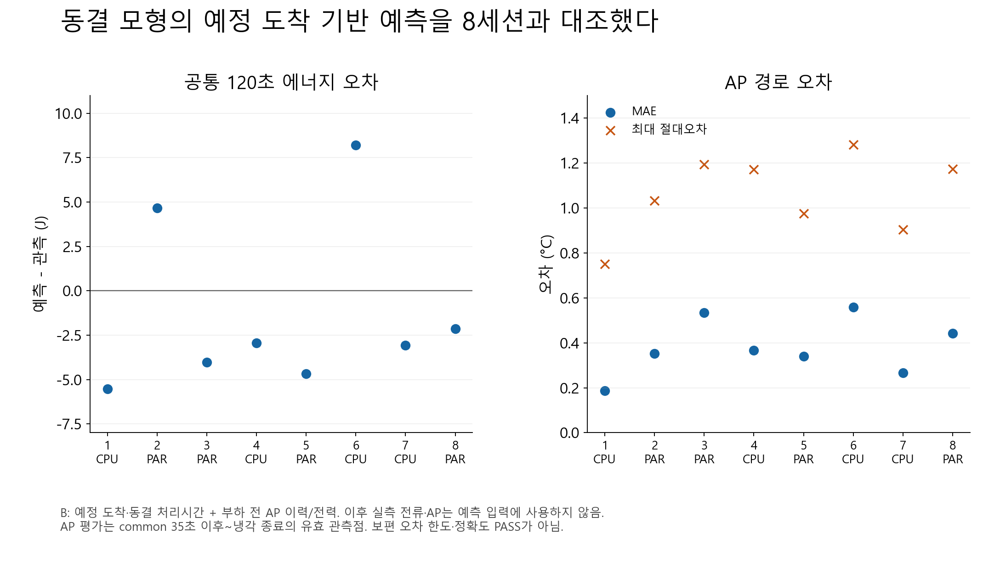

A24 등록192요청의 실제 온라인8세션을 재사용했습니다. 병행의 응답 개선을 관측했으며 에너지·열 우월성은 미판정입니다.
8장 발표 문안·결과 표·시연 순서 · 세션별 수치 · 시뮬레이터



전체 곡선·실제 lane·잔차는 원8세션 결과에서 확인할 수 있습니다. 관측 최고AP 차이와 같은 초기조건 모형의 예상 차이를 구분합니다. 배터리 사용시간·SOC·BAT 온도 개선을 검증하지 않았습니다.